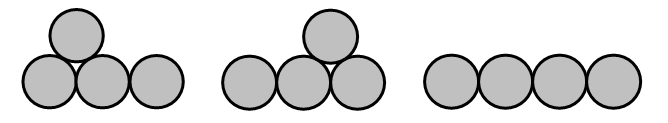
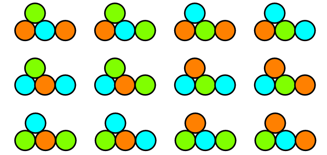

An arrangement of coins in one or more rows with the bottom row being a block without gaps and every coin in a higher row touching exactly two coins in the row below is called a fountain of coins. Let $f(n)$ be the number of possible fountains with $n$ coins. For $4$ coins there are three possible arrangements:

Therefore $f(4) = 3$ while $f(10) = 78$.
Let $T(n)$ be the number of all possible colourings with three colours for all $f(n)$ different fountains with $n$ coins, given the condition that no two touching coins have the same colour. Below you see the possible colourings for one of the three valid fountains for $4$ coins:

You are given that $T(4) = 48$ and $T(10) = 17760$.
Find the last $9$ digits of $T(20000)$.
solve(n=4) → ?solve(n=20000) → ?